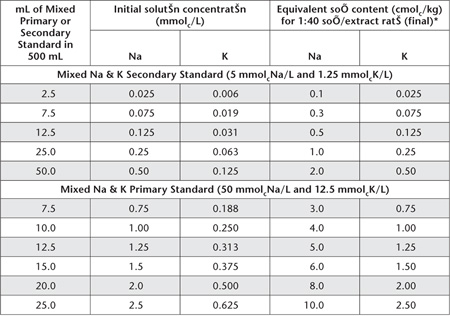

This method is preferred for estimates of exchangeable bases (Ca2+, Mg2+, Na+ and K+) and CEC on alkaline soils containing solid-phase carbonates (Tucker 1954; Loveday et al. 1972). This includes calcareous soils from the central west of New South Wales (Pierce and Morris 2004). It will also provide reliable estimates on soils dominated by colloids with permanent negative surface charges.
The method is known to underestimate exchangeable Ca2+ and Mg2+ and simultaneously overestimate apparent CEC of neutral and acidic soils that contain variable-charge colloids (Gillman et al. 1982; Baker 1984). By virtue of its high ionic strength and strong buffering capacity, however, it does provide a measure of maximum negative charge that can be developed by soils containing variable-charge colloids.
A combination of 60% aqueous ethanol and 20% aqueous glycerol are used initially to remove soluble salts prior to extraction of cations by leaching with alcoholic 1 M NH4Cl at pH 8.5 (Tucker 1971) at a soil/solution ratio of 1:20. Exchangeable cations are determined in the leachate using ICPAES (preferred), AAS (Ca2+, Mg2+, Na+ and K+) or FES (Na+ and K+).
CEC is determined after displacing NH4+ (and Cl–) with a solution of 15% KNO3 plus 6% Ca(NO3)2.4H2O. This K-Ca solution combination has a multiple capacity for effectively displacing exchangeable NH4+ from exchange sites (Tucker and Beattie 1974a) in addition to excess Cl–.
Apparatus and operational procedures for a 2.5 g soil sample (<2 mm air-dry) are described, although larger size soil samples (plus commensurate increases in extractant, etc.) do lessen the possibility of measurement variability. There is a pre-treatment to remove most soluble salts. Carbonate dissolution is suppressed, but gypsum can interfere. If more than 0.6–0.7% gypsum is present, direct measurement of gypsum is recommended, followed by appropriate adjustments to exchangeable bases and CEC.
Extracting Solution – Alcoholic 1 M Ammonium Chloride at pH 8.5
Dissolve 535 g ammonium chloride (NH4Cl – low in Ca2+, Mg2+, Na+ and K+) in about 3 L of deionised water. Add 6.65 L of 96% ethanol (special grade Sarina – SMF3; sg. 0.803 containing 2% methanol) and shake or stir well to expel any entrained air. Using a pH meter (wash salts from glass and calomel electrodes before use), adjust solution to pH 8.5 with high purity ammonium hydroxide (NH4OH). Make volume to 10 L with deionised water. Keep well sealed to prevent access of CO2 and loss of free NH3. This Extracting Solution contains approximately 60% w/w of 96% ethanol/kg solution.
5 M Ammonium Chloride at pH 8.5
As for Method 15A1 but adjust to pH 8.5 as described for the Extracting Solution.
Alcoholic 0.1 M NH4 Cl Wash Solution
Add 100 mL alcoholic 1 M NH4Cl at pH 8.5 Extracting Solution to 290 mL deionised water. Add 600 mL 96% ethanol. Adjust to pH 8.5 with high purity NH4OH and make to 1 L with deionised water. Mix well and store in a stoppered container.
Strontium Chloride Solutions (only required if using an AAS analytical finish)
Sr Stock Solution
As for Method 15A1.
Sr Working Solution
As for Method 15A1.
Diluting Solution for Ca2+ and Mg2+ Analysis
1 L contains 1.5 g of Sr
Add 180 mL Sr Stock Solution to 60 mL alcoholic 1 M NH4Cl Extracting Solution and 40 mL 0.5 M HCl solution (both reagents from the same batches used during leaching of exchangeable bases). Dilute to 1 L with deionised water.
Lithium Chloride for Automated Na+ and K+
As for Method 15A1.
Wetting Agent – Brij 35
As for Method 5A2.
60% Aqueous Ethanol (w/w)
As for Method 15A2.
20% Aqueous Glycerol
As for Method 15A2.
K-Ca Displacing Solution
15% potassium nitrate and 6% calcium nitrate. As for Method 15B1.
0.5 M Hydrochloric Acid
1 M Hydrochloric Acid
Special Diluting Solution
Combine 400 mL 0.5 M HCl and 600 mL Alcoholic 1 M NH4Cl at pH 8.5 Extracting Solution and mix well. Reagents should be from the same batches used for leaching the soils.
0.1 M Nitric Acid
For use as collecting solution.
Acid-washed Sand
As for Method 15B1.
Mixed Primary and Secondary Standards for Ca2+, Mg2+, Na+ and K+
As for Method 15A1.
Mixed Working Standards for Exchangeable Bases
Accurately dispense Mixed Ca and Mg Primary and Secondary Standards as indicated in Table 15.5 and Mixed Na and K Primary and Secondary Standards as indicated in Table 15.6 into 500 mL volumetric flasks. Add 60 mL of 5 M NH4Cl at pH 8.5, 200 mL 96% Ethanol and 100 mL of 1 M HCl to each flask and make to volume with CO2-free deionised water and mix. Store in clean plastic bottles.
Table 15.5. Examples of dilutions and concentrations for Ca2+ and Mg2+ Working Standards – Alcoholic 1 M NH4Cl at pH 8.5.
|
|
Equivalent soil content (cmolc/kg) of Ca & Mg, respectively, for 1:40 soil/extract ratio (final) following: |
|
mL of Mixed Primary or Secondary Standard in 500 mL |
Initial solution concentration (mmolcCa & Mg/L) |
1 + 9 dilution* of samples and standards |
1 + 49 dilution† †† of samples; 1 + 9 dilution of standards |
Mixed Ca & Mg Secondary Standard (10 mmolcCa & Mg/L) |
|||
2.5 |
0.05 |
0.2 |
– |
7.5 |
0.15 |
0.6 |
3.0 |
12.5 |
0.25 |
1.0 |
5.0 |
25.0 |
0.50 |
2.0 |
10.0 |
50.0 |
1.00 |
4.0 |
20.0 |
Mixed Ca & Mg Primary Standard (100 mmolcCa & Mg/L) |
|||
7.5 |
1.5 |
6.0 |
30.0 |
10.0 |
2.0 |
8.0 |
40.0 |
12.5 |
2.5 |
10.0 |
50.0 |
15.0 |
3.0 |
12.0 |
60.0 |
20.0 |
4.0 |
16.0 |
80.0 |
25.0 |
5.0 |
20.0 |
100.0 |
*Dilute 1 part Working Standards and sample leachates with 9 parts Sr Working Solution if analysing by AAS. For ICPAES, substitute the Sr Working Solution with Alcoholic 1 M NH4Cl at pH 8.5 Extracting Solution.
†AAS analysis requires accurate 1:5 dilution of samples already diluted 1+9 with Sr Working Solution. Use Sr Diluting Soluioon for Ca2+ and Mg2+ Analysis by AAS (1 L contains 1.50 g Sr) as diluent. Working Standards already diluted 1+9 should not be further diluted.
††Some ICPAES may experience difficulties due to the presence of alcohol. If ICPAES analysis is possible, substitute the Sr Working Solutions with Alcoholic 1 M NH4Cl at pH 8.5 Extracting Solution.
Table 15.6. Examples of dilutions and concentrations for Na+ and K+ Working Standards – Alcoholic 1 M NH4Cl at pH 8.5.

*If necessary, dilute extracts of high concentration with Alcoholic 1 M NH4Cl at pH 8.5 Extracting Solution to bring these within the optimum range of the instrument and to maintain the same concentrations of NH4Cl in standards and sample extracts.
Micro Leaching Columns (see Figure 15.3)
Leaching columns for 2.5 g soil samples are made from two 15 mL polypropylene centrifuge tubes (e.g. Camlec CP 400C or Kayline CP 10015C) by making a 1 mm hole in the base of each tube. When one tube is placed inside the top of another, it acts as a small reservoir for reagents during leaching. A larger plastic reservoir may be fitted above the reservoir tubes in their rack. A small borosilicate glass wool or cotton wool plug is used to retain soil within the leaching tube.
Micro Leaching Column Rack
The rack is constructed from Perspex (or similar) and is about 25 × 20 cm. Each rack has 50 holes which accept the leaching tubes. Holes are placed to allow leaching tubes to protrude into necks of borosilicate glass or plastic bottles, graduated to hold 100 mL. These bottles are held in place by a wooden tray or similar.
Leaching tubes and reservoirs can be capped individually or covered with plastic sheet to reduce evaporation of Extracting Solution during leaching, to prevent contamination and to limit reactions with atmospheric gases.
Figure 15.3. Lower portion of microleaching tube used for exchangeable bases and CEC involving alcoholic 1 M NH4Cl (Method 15C1).
Conditioning apparatus
Place a small plug of borosilicate glass wool or cotton wool in the bottom of each leaching tube and place in rack. Cover with borosilicate wool or cotton wool (depth about 2 mm) with acid-washed sand.
Place the rack of tubes over a suitable bulk container and leach all columns with approximately 10 mL of 1 M HNO3 solution followed by at least 10 mL of deionised water. Discard the leachate.
Allow leaching columns to dry (a drying cabinet may be used to hasten this step).
Leaching of Exchangeable Bases
Weigh 2.50 g air-dry soil (<2 mm), mix thoroughly with an equal quantity of acid-washed sand, and transfer carefully to a dried leaching column. Leave one leaching column in each 50 free of soil but including acid-washed sand to act as a method blank. Cover the soil/sand mixture with a 2 mm layer of acid-washed sand.
To remove soluble salts, leach with 12.5 mL of 60% Aqueous Ethanol followed by 12.5 mL of 20% Aqueous Glycerol: discard the leachates.
In preparation for leaching of exchangeable bases, dispense 40 mL of 0.5 M HCl solution into plastic bottles graduated to 100 mL then place a bottle under each leaching column. Leach soil with 12.5 mL of Alcoholic 1 M NH4Cl at pH 8.5 into the plastic bottles. Repeat this leaching step a further three times to give a total leachate of 50 mL. This often requires an overnight leaching and tubes should be either stoppered or covered with a plastic sheet. Soils must not dry out once leaching has commenced.
Make leachate to 100 mL in the plastic bottles with Alcoholic 1 M NH4Cl. Securely cap bottles and retain for determination of exchangeable bases.
Washing (removing) excess NH4Cl from soils
Remove rack to a suitable draining tray and leach soils with 10 mL of Alcoholic 0.1 M NH4Cl, followed by 10 mL of 60% Aqueous Ethanol and discard leachates.
Displacement of NH4+
Dispense 40 mL of 0.1 M HNO3 Collecting Solution into 100 mL graduated borosilicate or plastic bottles. Place rack containing the leaching tubes over the bottles and immediately leach soil with 12.5 mL of K-Ca Displacing Solution. Repeat this leaching step a further three times to give a total volume of 50 mL.
When leaching is complete, make leachate to 100 mL with K-Ca Displacing Solution, seal and retain for CEC determination.
Determination of Ca2+, Mg2+, Na+ and K+ by ICPAES
As indicated in a note associated with Table 15.5, ICPAES may experience difficulties due to the presence of alcohol in the extracting solution presented for analysis. If ICPAES analysis is possible, set up and operate the ICPAES instrument as advised by the manufacturer. Suitable wavelengths are: Ca = 430.25 nm; Mg = 285.21 nm; Na = 588.96 nm; and K = 766.49 nm. Calibrate the instrument using an appropriate range of Working Standard Solutions, guided by examples in Tables 15.5 and 15.6. The 1:40 soil/extraction ratio can be factored into the calibration on the ICPAES. A calibration blank should also be measured and adjustments made as necessary.
Determination of Ca2+, Mg2+, Na+ and K+ by AAS
Follow manufacturer’s recommendations with respect to instrument parameters; an air-acetylene flame is usual for all elements; preferred spectral lines are: Ca = 422.7 nm; Mg = 285.2 nm; Na = 589.0 nm; and K = 766.5 nm. Ca2+ and Mg2+ are measured on diluted extracts, whereas, extracts for Na+ and K+ analysis are only diluted if over range. A calibration blank should also be measured and adjustments made as necessary.
For Ca2+ and Mg2+, dilute each soil extract and each Mixed Ca and Mg Working Standard with Sr Working Solution as indicated in Table 15.5, noting that Sr is included to suppress interferences in measurement due to phosphate and other ions (MacPhee and Ball 1976). Should Ca2+ and Mg2+ concentrations be above the optimum range of the instrument, dilute samples only as indicated in Table 15.5. Mix well, then determine Ca2+ and Mg2+ concentrations directly, adjusting as necessary for any dilutions.
For measurement of Na+ and K+ by AAS, use a selection of Mixed Working Standards (Table 15.6). Determine concentrations of Na+ and K+ in soil extracts directly from the instrument. Settings and operating performance should be checked periodically.
Na+ and K+ (Automated)
As for Method 15A1 but using relevant standards (Table 15.6) and blank solutions.
CEC
Determine CEC by Method 15I3 or 15I4.
Exchangeable Ca2+, Mg2+, Na+ and K+ Report alcoholic exchangeable Ca2+, Mg2+, Na+ and K+ (cmolc/kg), expressed on an oven-dry soil basis. Use the air-dry moisture to oven-dry moisture ratio to make the oven-dry conversion. Refer to Method 2A1 for guidance with regard to this soil moisture calculation.
CEC
Report CEC – record relevant method code/s; cmolc/kg on an oven-dry basis. Refer to Method 2A1 for guidance with regard to this soil moisture calculation.